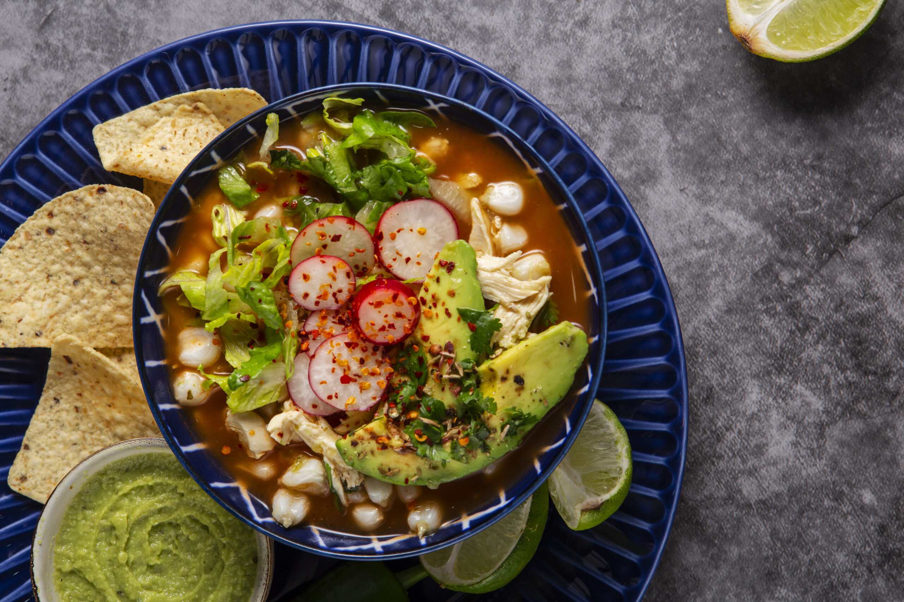
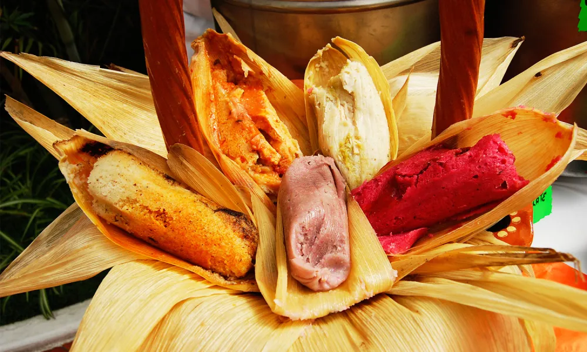

La gastronomía mexicana fue reconocida como Patrimonio Cultural Inmaterial de la Humanidad en 2010, celebrando su rica diversidad y herencia cultural. Esta cocina combina ingredientes autóctonos con técnicas ancestrales que han sido transmitidas a lo largo de las generaciones. El uso del maíz, los chiles y las especias es fundamental en platillos emblemáticos como el mole, los tacos al pastor y el ceviche. La gastronomía mexicana no solo es conocida por sus sabores intensos y variados, sino también por su capacidad para contar historias culturales a través de cada receta. Su reconocimiento por parte de la UNESCO resalta la importancia de preservar estas tradiciones culinarias que son parte integral de la identidad mexicana.
Mole Poblano

Este complejo platillo consiste en una salsa espesa a base de chiles secos, chocolate y especias, que se sirve comúnmente sobre pollo o pavo. Es uno de los platos más representativos de la cocina mexicana. Según fuentes del gobierno de México, el origen del mole se remonta a las culturas prehispánicas, donde los indígenas mezclaban varios tipos de chiles con semillas de calabaza, hierba santa y jitomate para crear una salsa que ellos denominaban "mulli", sin embargo, durante por mucho tiempo se creyó que este alimento se creó en el Convento de Santa Rosa, en la ciudad de Puebla, cuando una monja molió en un metate diferentes chiles y condimentos
Tacos al pastor

Con influencias libanesas traídas por inmigrantes en el siglo XX, estos tacos están hechos con tortillas rellenas de carne marinada en achiote (generalmente cerdo) cocida en un trompo vertical similar al shawarma.
Pozole

Este guiso a base de maíz tiene raíces prehispánicas y era preparado por las civilizaciones indígenas como los aztecas para ceremonias especiales. Se sirve comúnmente con carne (cerdo o pollo) y diversos acompañamientos como repollo, limón, chile y cebolla. El pozole es un platillo tradicional mexicano que se presenta en diversas variantes, cada una con características únicas según la región, por ejemplo, el pozole rojo, su color proviene del uso de chiles secos (como el guajillo) que se muelen y se añaden al caldo, también podemos tomar en cuenta el pozole seco, donde se presenta sin caldo, en su lugar, se concentrá en los ingredientes sólidos como carne y maíz.
Tamales

Con orígenes que datan desde tiempos precolombinos, los tamales son masas de maíz rellenas que se envuelven en hojas de maíz o plátano antes de ser cocidos al vapor. Se pueden rellenar con una variedad infinita de ingredientes dulces o salados. Cada región tiene sus propias recetas y estilos de tamales, lo que refleja la diversidad cultural y regional, algunos ejemplos de ellos son los tamales de piña y piñón, que son preparados con piña y piñón, a menudo combinados con rompope o nuez, los tamales choyeros, que pueden ser de cerdo, res o pollo y son preparados en hoja de plátano o maíz, acompañados de aceitunas y chiles.